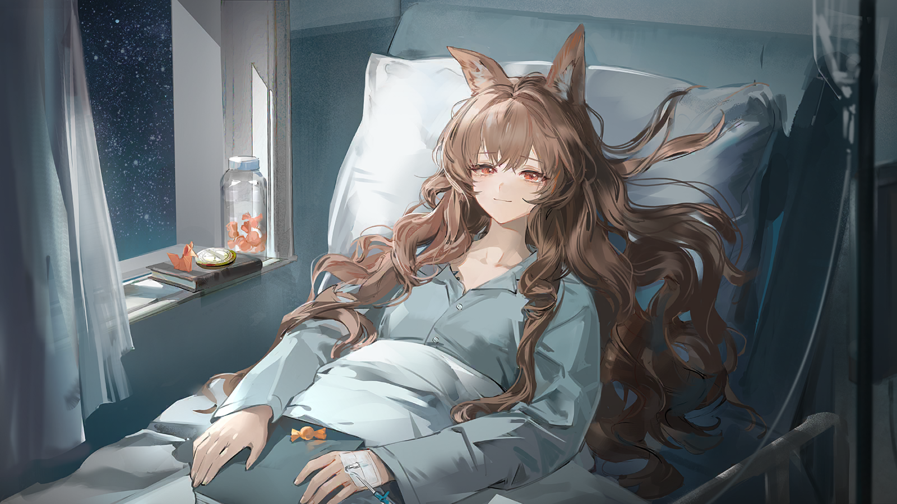
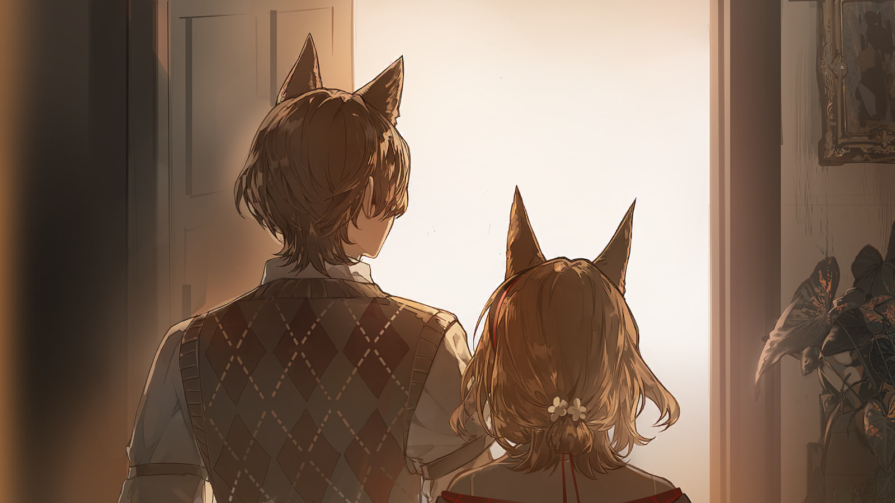
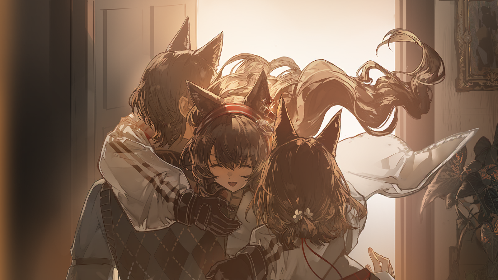

起初，那只是一种模糊的感觉，在我的信使工作出错的时候，我的法术失灵的时候，我有想说的话说不出口的时候......
但很快，这种模糊的感觉就随着一件事，一件我恐怕永远无法忘记的事，变成了刺人的现实。
罗德岛遭遇袭击，承载着我和许多人回忆的舰船被毁；一位极受爱戴的医生离去，那位医生对罗德岛的博士来说，是非常重要的人。
就算现在凯尔希医生已经回到我们身边，我仍然无数次想回到被要求离开罗德岛的那一天......
选择留下，选择站在重要的人身边，选择去做让我自己不会留下遗憾的事。
我开始加倍刻苦地锻炼法术，却无论如何也做不到游刃有余，我加倍努力地完成信使的工作，却小错不断。
我有很多很多想说的话，却不知道该如何开口......这个问题一直困扰着我。
我多想说服自己，我只是罗德岛一个普通患者兼见习术师，我只是一个不成熟的信使，我那些想说的话只是每个人脑子里都有的怪念头。
可我明明又不想这样。我讨厌这样。我觉得我本来可以做到更多，我可以飞到更高的地方......

安洁莉娜
华、华法琳医生！

华法琳
坐。
安洁莉娜
好的！

华法琳
别这么拘谨。你的体检是我做的，我就来和你聊聊。

安洁莉娜
是......结果不乐观吗？
华法琳
恰恰相反，你的情况不算太糟，只要从现在开始干预，生存期和生存质量都是有保证的。

安洁莉娜
生存期......生存质量？

华法琳
啧，果然患者听了这种术语反应都不好......
PLAYER CHOICE // 玩家选项
[1]她是说，你可以回归正常生活。
【以下剧情 · 对应上述任一选项后的接续】

安洁莉娜
这位是......？
华法琳
博士？你不是正在和凯尔希她们开会吗？
PLAYER CHOICE // 玩家选项
[1]现在你也得来开会了。
[2]我们现在需要你的意见。
【以下剧情 · 对应上述任一选项后的接续】

华法琳
唉，行吧。我看看医疗部现在还有谁闲着，谁闲谁来给患者做宣教——
华法琳
啧，都忙......
安洁莉娜
我没关系的！知道能回归正常生活就比什么都强了！
华法琳
这倒没错。高兴一点，精神状态是很重要的。
华法琳
你感染程度没有特别深，症状却比较明显，这其实也不是坏事，说明你的免疫系统至少还在正常工作。
华法琳
控制症状比控制感染加深简单，和逆转感染程度相比，控制感染加深又简单太多。
华法琳
等我们研发出能逆转体细胞与源石融合程度的药物，那个时候，才算是真正在矿石病面前有了像样的武器。
安洁莉娜
为了那一天早点到来，我......可以帮忙吗？
华法琳
虽说行不行一般取决于人事部，但既然博士就在这儿，博士，你觉得呢？
PLAYER CHOICE // 玩家选项
[1]当然可以。
【以下剧情 · 对应上述任一选项后的接续】
PLAYER CHOICE // 玩家选项
[1]罗德岛欢迎每个志同道合的人。
【以下剧情 · 对应上述任一选项后的接续】
PLAYER CHOICE // 玩家选项
[1]患者怎么样了？
【以下剧情 · 对应上述任一选项后的接续】
华法琳
......
PLAYER CHOICE // 玩家选项
[1]上次见面，她的状况还很稳定。
【以下剧情 · 对应上述任一选项后的接续】
华法琳
因为急着开会，虽然宣教按流程做完了，但有关矿石病人施术的问题强调得还不够......
华法琳
患者对感染者施术可能造成的后果没有概念，自告奋勇帮人搬东西，结果......激发的不是施术单元，而是自己体内的源石。
华法琳
这样的事情以前在她身上发生过许多次，只是一直没有爆发，直到刚才......

华法琳
......是我的问题。
PLAYER CHOICE // 玩家选项
[1]......不，是我催的你，我们都有责任。
【以下剧情 · 对应上述任一选项后的接续】

凯尔希
现在不是抢着承担责任的时候。
华法琳
凯尔希医生......
凯尔希
为了避免这样的问题再次发生，医疗部以后会严格考评患者宣教的完成程度。
华法琳
......嗯。
凯尔希
此外，我需要你评估一下患者预后。
华法琳
短期预后不良。患者体内的源石活性很高，尽管同化程度较轻，但稍有不慎......
PLAYER CHOICE // 玩家选项
[1]你是说只要挺过这关，她就能好起来？
【以下剧情 · 对应上述任一选项后的接续】
华法琳
是这样的。
凯尔希
你在暗示我们正在会上研讨的新型抑制剂。
凯尔希
我知道你在这种药物的开发上投入了大量精力，对它有很高的期待，但它的临床效果还需进一步确认。
凯尔希
哪怕有效，它也只是一种新型抑制剂，而非根治矿石病的灵丹妙药。
PLAYER CHOICE // 玩家选项
[1]没错。
【以下剧情 · 对应上述任一选项后的接续】
PLAYER CHOICE // 玩家选项
[1]可这位患者需要它。
【以下剧情 · 对应上述任一选项后的接续】
凯尔希
......我赞同你的判断，但我们的时间很难谈得上充足。
PLAYER CHOICE // 玩家选项
[1]我会挤出时间。
【以下剧情 · 对应上述任一选项后的接续】
华法琳
既然博士都这么说了，我也去通知实验室准备加班。
PLAYER CHOICE // 玩家选项
[1]多谢。
【以下剧情 · 对应上述任一选项后的接续】
PLAYER CHOICE // 玩家选项
[1]我一定会让她好起来的——
【以下剧情 · 对应上述任一选项后的接续】

凯尔希
博士，稍微出来一下。
凯尔希
患者躺在床上为矿石病所苦的情形的确令人同情。
凯尔希
但我们绝不应该用模糊的话语给患者制造虚无缥缈的希望。
PLAYER CHOICE // 玩家选项
[1]......抱歉。
【以下剧情 · 对应上述任一选项后的接续】
我起先并不相信自己真的能好起来。
上学时，我亲眼见过一个同学因病日渐虚弱。他是感染者的事实泄露时，家长们愤怒地冲到学校讨要说法。
而我那时看着校园里的混乱，半是烦躁半是悲哀地想着，啊，果然是矿石病，怪不得他一天比一天衰弱，只能走向注定的结局......
......但我竟然真的好起来了。
几天后，我从危重病房转移到了住院中心的普通病房。
腿部的结晶从入院前的一点点长到一眼可见，据说从此再也不可能消退了，可我其实并不那么在意。
因为我住院时见过了结晶长在咽部的人如何失声。
我见过了结晶深入骨骼的人如何惶惶不可终日，哪怕疼痛尚未开始，也会不停按铃，在恐惧的驱动下哀求医护给他留一针止痛剂。
新药一视同仁地对所有人起效，而我是其中最幸运的那个。
从病房搬到宿舍那天，尽管我还发着低烧，也没什么力气，照顾过我的医护们还是给我办了一场小小的庆祝会。
华法琳医生来了，Medic干员来了，照顾过我的实习医生芙蓉来了，连凯尔希医生也短暂地露了一面，尽管很快就又离开了。
她们说，多亏了博士，新药才得以顺利面世。
而我也就一直期待着博士出现，好让我当面说声感谢，但直到大家散去也未能如愿。
半梦半醒之间，我忽然想起那天在重症病房里的场景。
唔，原来是这样。
博士的确是不该来的。
博士给了我不切实际的希望，而这点不切实际的希望居然成了现实，这样的幸运，一个人一生恐怕也就只有一次了吧。
所以，博士不来是对的。
正当我这样说服了自己，打算就这么跟头痛和解，赶紧入睡的时候，我突然听见了敲门声。
Medic
安洁莉娜小姐，差点忘了，送给你的糖果。
安洁莉娜
谢谢你......
Medic
这不是我送的，是博士送的啦。
Medic
采购部新进了一批新口味糖果，糖纸又很好看，博士就给医疗部的每个患者都送了些。
Medic
还好我刚想起来你已经搬到了这边，不然就漏人啦，嘿嘿。

安洁莉娜
......嗯。
Medic离开之后，我剥开糖纸。
糖果的味道现在我已经记不清了。
我只记得，不知为何，在那一天之后，我养成了折纸星星的习惯。

嘉维尔
......这不是完全不碍事了嘛！
嘉维尔
你的症状已经完全缓解，感染也进入了稳定期。按我们感染者的标准来说，你已经算是好啦。
嘉维尔
除了按时用药，以及不要擅自施术之外，医疗部对你没有更多限制了。作为庆祝，要不要来扳个手腕？

杜宾
通过。
杜宾
恭喜你，安洁莉娜干员，你的施术已经完全不会牵动体内的活性源石，换句话说，今后你可以自由施术了。
杜宾
至于测试中磕磕绊绊的部分，重力操纵的确是相当罕见且有潜力的源石技艺，感到困难是正常的。
杜宾
关于你今后的训练，我推荐咨询以下几位术师干员......

可颂
这么厉害？！

可颂
不行，不行不行不行。能天使，再给我加五公斤的重量！

能天使
你可是在用蛮力跟人家的源石技艺对着干哦。
可颂
我才不信——

可颂
哎呀！

可颂
嘿嘿，没关系没关系。等哪天有新人来就可以怂恿他跟安洁莉娜比赛举重了，到时候只要全押安洁莉娜......

莱恩哈特
呼，安全着陆。

莱恩哈特
多亏你的法术，我们少跑了不少弯路，这样就有足够时间抵达安全区域了。

莱恩哈特
欸？只能勉强让我不摔伤，做得还不够？要是能让整辆汽车飞起来就好了？

莱恩哈特
哈哈，没人从一生下来就能当源石技艺大师的。放宽心放宽心。
莱恩哈特
看你对业务的熟悉程度，似乎不是第一次跟天灾信使出任务？
莱恩哈特
唔，普罗旺斯啊......难怪你这么熟练，那个人很有责任心的。单论责任心，说不定比艾尔斯还强一些......
莱恩哈特
我是不是还没跟你讲为什么这次艾尔斯留在本舰了？来来来，我跟你讲，事情还要从他宿舍的电源插座说起......
设身处地为患者着想的医生，最先考虑学员需求的教官，无论感染与否都能一同欢笑的朋友，脾气各异却又各有所长的同事......
我是信使安洁莉娜，罗德岛的信使，安心院安洁莉娜。
只要想起这件事，哪怕在楼群间冰冷的风中穿行整夜，胸膛处也总会保留一丝暖意。
罗德岛真的是个温暖得过分的地方，我想。
罗德岛甚至愿意为了一个尚且不够格预警天灾的信使，一个严格意义上还处在实习状态的干员，去和难缠的家族接洽......

安洁莉娜
......

罗德岛外勤干员
怎么，好长时间不回家，紧张了？
当然了。
我紧紧地攥着那个已经填满的本子——丽萨送给我的——好半天说不出话。
天真的我既想亲手把那封解释我离家来龙去脉的信送到家门口的邮箱，却又始终无法下定与父母见面的决心。
是博士提醒我，两件事不必一同完成。先告诉家人自己一切安好，比什么都更加重要。
我听从了博士的建议，而父母的回信比我想象中来得更快......
安洁莉娜
不，我只是在后悔，之前不该一直拖着这件事情。
安洁莉娜
对了，家族的人难缠吗？罗德岛和他们打交道，有没有吃什么亏？
罗德岛外勤干员
嗐，与其在乎这些，不如好好想想一会儿和父母说些什么，这几天要怎么度过。
罗德岛外勤干员
你看，那边有个水果摊。我们大炎人回家看父母都要提点水果的，你看要不要也买些什么？
我在水果摊前想了许久。
葡萄？苹果？石榴？无花果？橄榄？
寓意美好的水果在我面前如宝石般展开，我却迟迟无法决定。

究竟是何种甜美而酸涩、柔软又粗粝的水果，才能同时代表离去的仓促、寻觅的凄惶、善意的闪光，和即将相见的雀跃？
......我最终拾起一枚饱满的酸橙。
我不知道酸橙的寓意，我只是意识到自己唇间依稀的酸橙气味，又想起，那管唇膏是我从家里带出来的最后一支。
它是我。爸爸妈妈会知道，它就是我。我回来了。
是的，我回来了。
我躲在门后，不敢看爸爸妈妈的表情，直到我听见妈妈喉咙中滚动着的低泣。
我刚刚感染时，这样的声音常常在妈妈以为我睡下之后在家里回荡，而今那声音别无二致，其中传递的感情却只剩......

重逢的喜悦。
我哭着，笑着，语无伦次地倾吐着歉意与思念。
我其实听不清他们在说什么，但我知道，我们是一样的。
久别后的重逢比这世上一切的宝物都更珍贵，它正在我们胸中搏动......
......而这一切甚至完美到不是一场梦。
而这一切......
虽然不是一场梦，却不知为何，迎来了梦醒的时刻。
安洁莉娜
所以......其实不能选择不出外勤？

可露希尔
你的心情我不是不理解啦，但这的确是为了各位干员的安全着想。

可露希尔
你是罗德岛最信任的信使之一，只是......罗德岛确实需要处理一个很棘手的问题。
可露希尔
而且，一旦真出了什么事，你也可以立刻将消息传递到罗德岛希望的地方。
安洁莉娜
出了事之后......吗？

可露希尔
也不是一定会出事的啦！而且......这真的是为你的安全负责，真的没有别的意思。你别往心里去。
安洁莉娜
......嗯。
安洁莉娜
那......我可以问一下，有哪些干员可以留在罗德岛上吗？

可露希尔
让我想想，最重要的当然是维持罗德岛基本功能的干员。
我尊敬的人。
可露希尔
精英干员。
我憧憬的人。
可露希尔
再就是凯尔希、华法琳、我......
我深知自己无力与之比肩的人。
可露希尔
......大概也就这么多人吧？这次的情况确实特殊，本舰忽然这么冷清，我也挺不习惯的。
安洁莉娜
那博士......
可露希尔
唔，对，还有那家伙，当然也得在这里了。
安洁莉娜
......也对。
可露希尔
往好处想，这也算是一个改换心情的机会。再回家一趟，去叙拉古那边的办事处怎么样？
安洁莉娜
不，罗德岛能让我和家人度过那段时间，我已经很开心了。这次......
安洁莉娜
......就把我安排在离本舰最近的地方吧。
但罗德岛本舰被毁的消息传来时，我已经无能为力。
我能做的不过是......弥补。
为了成为那些可以留下来的人，我加倍努力，期望能控制我独特的，被所有人寄予厚望，却总也无法稳定下来的源石技艺。
为了不让灾难重演，我主动承担更多的工作，期望我递送的每一封信都能成为罗德岛潜在的助力。
我做到了吗？
也许吧。
也许安洁莉娜已经成为了最可靠的信使，经她之手的信件和包裹从无错漏。
也许安洁莉娜的源石技艺已经炉火纯青，只要轻轻一挥法杖就可自如地操作重力，让一切围绕她旋转。
就像现在，也许只要安洁莉娜全力以赴，她可以颠倒这座城镇的上与下、轻与重。
也许她可以将水泥浇筑成血肉，将钢筋攒集成筋骨，将搏动的源石塞入胸膛，让风化的城镇恢复生机，让它站立在雷姆必拓的荒原中间。
也许她可以让城镇将那些绝望的人托在掌心，哪怕他们决心赴死，也将他们带离那片即将被天灾蹂躏的禁区。
也许在那之后，他们也会意识到自己的偏执，他们会像她一样，在绝望时看见朝自己伸出的手......
但那不是现在。
现在的安洁莉娜所能做的，只有站在红砂镇外等待，等待，一直等待到连她自己都绝望的时刻。

塔妮
安洁......该走了。

塔妮
刚刚我陪着嘉辛塔去红砂镇入口处，守门的感染者说了很多很难听的话，最后差点动武。
塔妮
那个人最后说......里面的感染者都已经准备好了武器，假如我们敢强闯进去，就让我们用生命“赎罪”......

塔妮
乌露露刚刚带着回心转意的感染者们离开这里，她也一直在催我们赶紧动身。
塔妮
安洁......？

安洁莉娜
......
我咬紧嘴唇看了那座城镇最后一眼，城镇回我以沉默。

有袋鼷兽
......

安洁莉娜
......
安洁莉娜
有袋......鼷兽？
塔妮
有袋鼷兽？这附近已经很危险了，它在哪里？
它飞得太快，我的视线追不上它的身影，但它应该是往南飞去了。
多谢它。多谢它出现在这里，偷走我接下来的话语，让我不至于在车上失声痛哭，让朋友们担心。
塔妮担忧地牵起我的手，我沉默着走上自己的车。